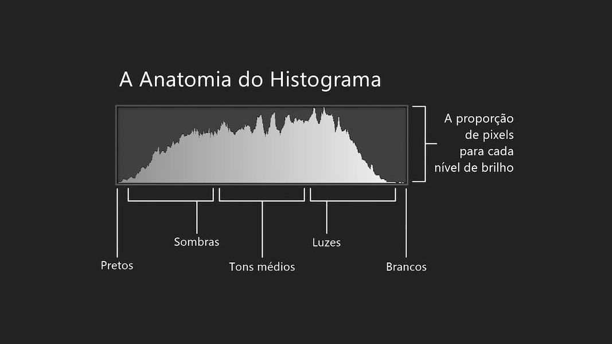

Essa aula foi sobre o histograma, que é uma ideia bem simples, mas que ajuda muito a entender uma imagem. Ele é basicamente um gráfico que conta quantos pixels existem de cada tom. No eixo horizontal ficam os níveis de intensidade, que numa imagem em escala de cinza de 8 bits vão de 0 (preto) a 255 (branco), e no eixo vertical fica a quantidade de pixels com aquele tom. Também dá pra normalizar, dividindo cada valor pelo total de pixels, e aí cada barra vira a probabilidade daquele tom aparecer na imagem.
O legal é que só de olhar pro gráfico já dá pra ter uma boa noção de como a imagem é. Se as barras estão concentradas do lado esquerdo, a imagem é escura. Se estão mais pra direita, ela é clara. Se estão espremidas numa faixa estreita, normalmente no meio, a imagem tem baixo contraste e fica com aquele aspecto cinza e meio apagado. E se estão espalhadas por quase toda a escala, a imagem tem alto contraste e mostra uma variedade bem maior de tons.
A parte que eu achei mais interessante foi a equalização, que redistribui os tons pra deixar o histograma o mais uniforme possível, usando a função de distribuição acumulada (CDF). Na prática, pra cada tom, você soma a probabilidade dele com a de todos os tons mais escuros e multiplica pelo maior tom possível. No exemplo da aula, com uma imagem de 3 bits (tons de 0 a 7), o tom 0 aparecia em 19% dos pixels, então o novo valor dele ficou 7 × 0,19 = 1,33, que arredondando vira 1. E diferente do alargamento de contraste do post anterior, aqui não tem nenhum ponto pra escolher na mão, é a própria imagem que define a função.
Só que ela não faz milagre. Como nenhum tom novo é criado, vários tons acabam caindo no mesmo valor, então o histograma final quase nunca fica totalmente plano, só bem mais espalhado que o original. E em imagens com muitos pixels quase pretos, o resultado pode até sair claro e desbotado demais.
Esse assunto veio numa boa hora, porque é justamente o que a gente vai implementar no Projeto 1 da disciplina, em C com SDL3: exibir o histograma da imagem, classificar o brilho pela média e o contraste pelo desvio padrão, e ter um botão pra equalizar e voltar pra imagem original.